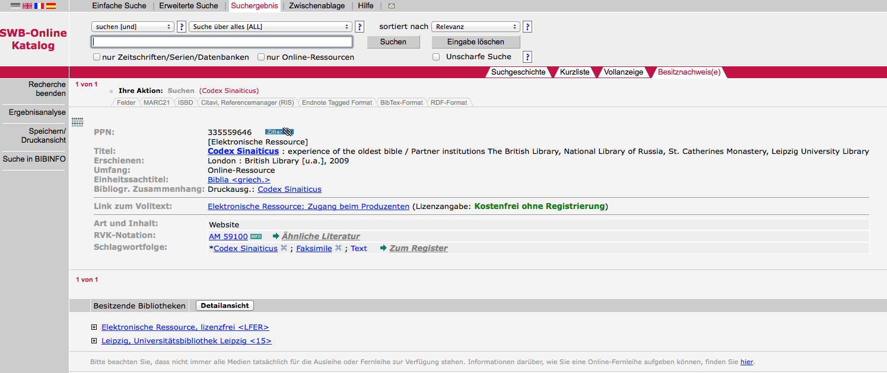
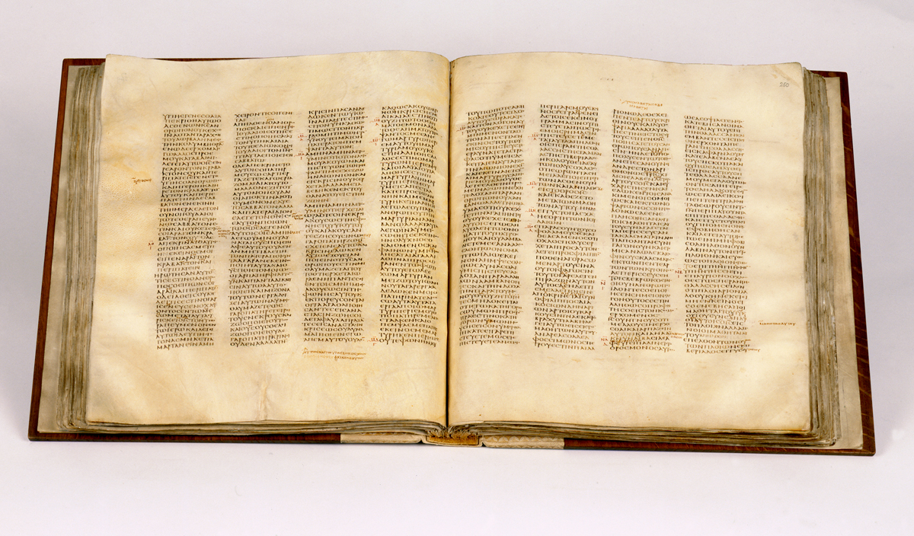
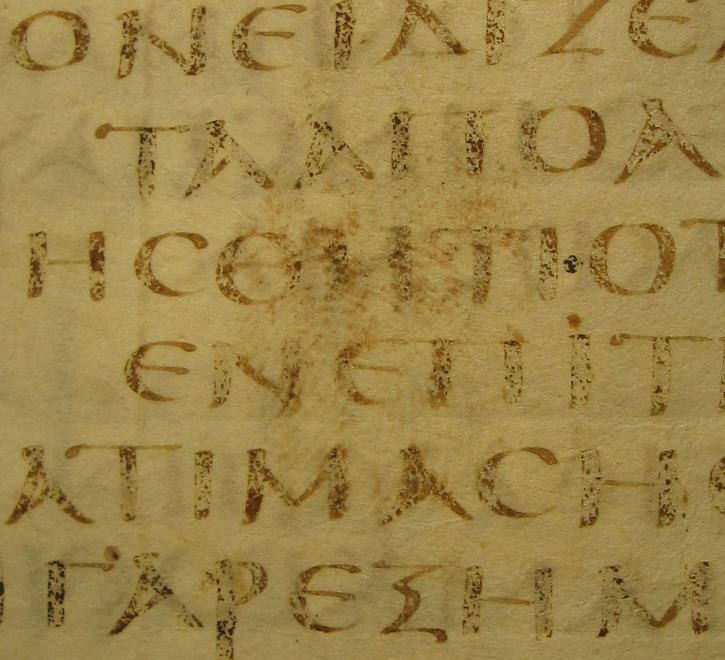
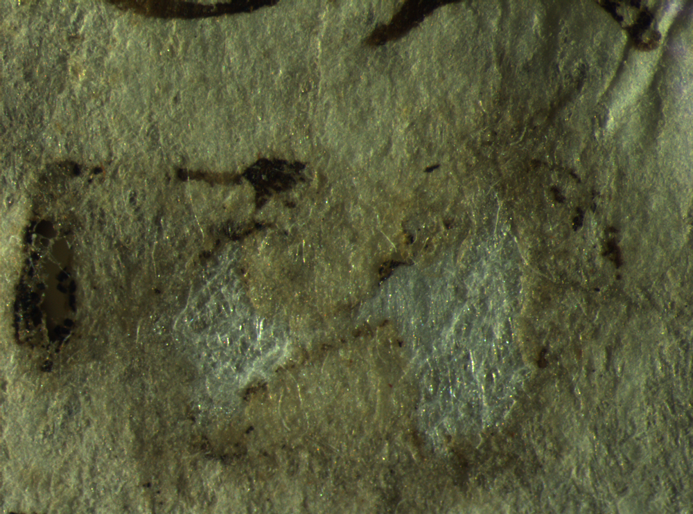
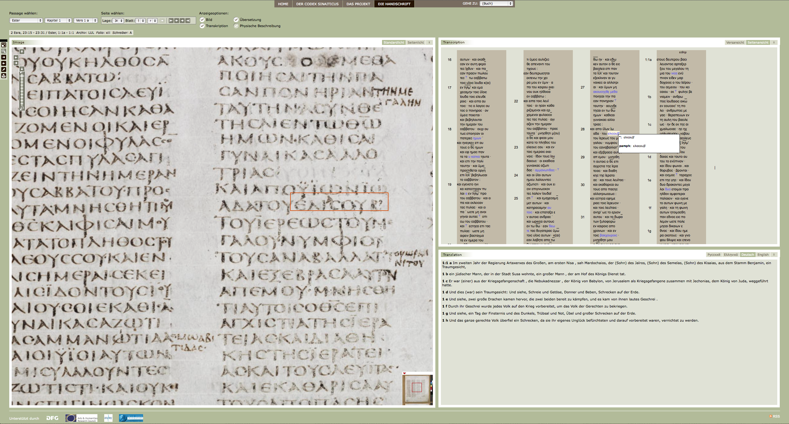
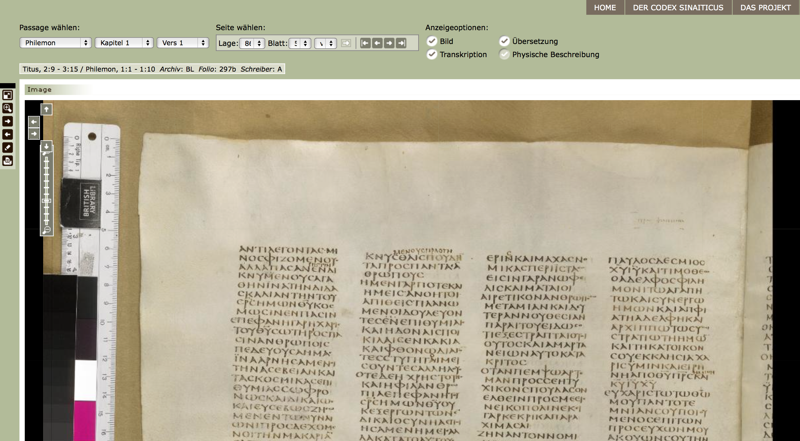
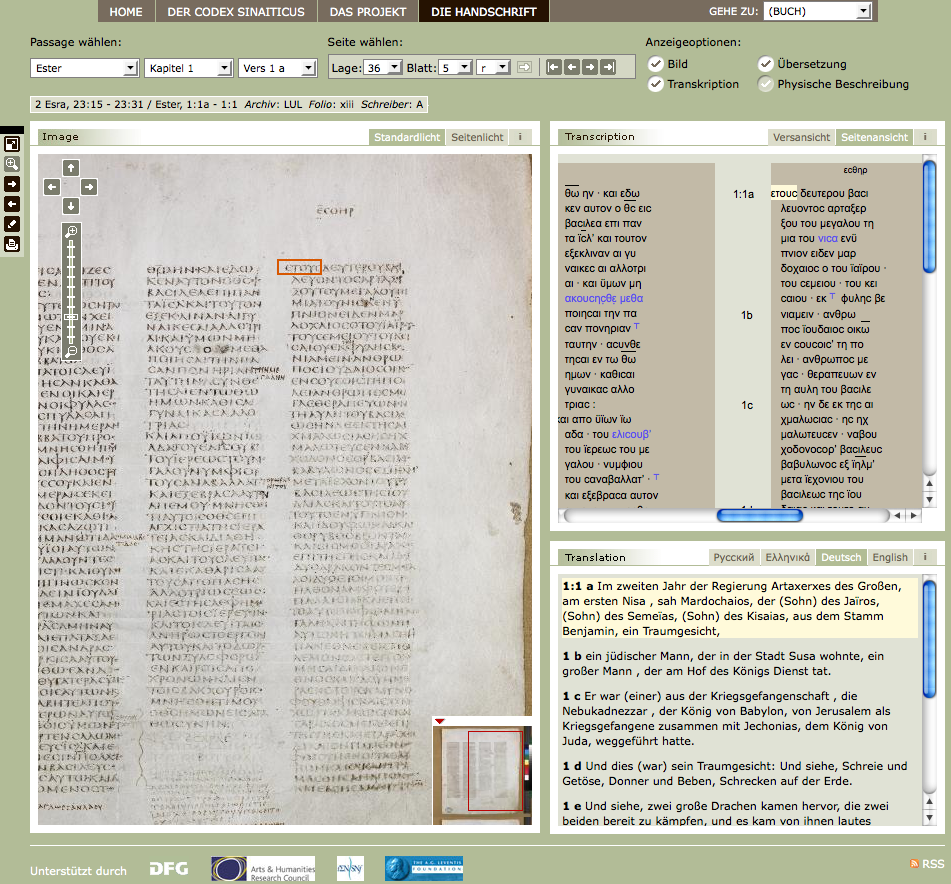
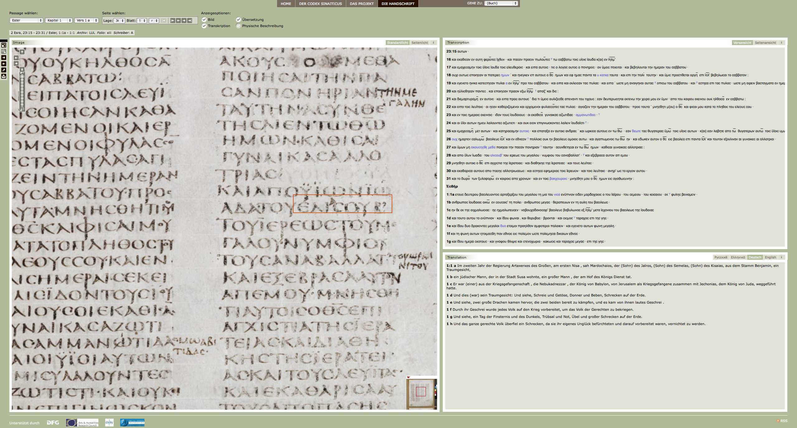

Codex Sinaiticus
Table of Contents
Abstract
Much effort was put into the digital edition of the Codex Sinaiticus, one of the oldest and most complete Codices of the New Testament. Whereas the material is conserved in four different places, this edition reconstructs a virtual codex, transcribing the text and offering documentary data for easy and deep access to the material. It can be described as a high quality project that aroused great public interest. At the same time, a printed facsimile edition was published allowing for a comparison of the two editions.
Die digitale Edition des Codex Sinaiticus http://codexsinaiticus.org/ ist ein im Prinzip abgeschlossenes Gemeinschaftsprojekt der British Library, der Russischen Nationalbibliothek, des Katharinenklosters auf dem Sinai und der Universitätsbibliothek Leipzig. Auf diese Institutionen sind die bis heute bekannten Teile des 1600 Jahre alten Manuskripts verteilt. Die neue, nun digitale Ausgabe ist in OPACs bibliografisch verzeichnet, was angesichts der beteiligten Institutionen nicht verwunderlich ist. Allerdings ist zu bemängeln, dass die bibliografischen Angaben mangelhaft sind. So fehlen in den OPAC-Einträgen von allen gepüften Bibliotheken, der British Library (British Library) und der Universitätsbibliothek Leipzig (Universitätsbibliothek Leipzig) sowie dem Bibliotheksservice-Zentrum Baden-Württemberg ((Bibliotheksservice-Zentrum Baden-Württemberg)) Angaben zum Herausgeber. Eine bibliothekarisch korrekte Verzeichnung dieses Projekts wäre wünschenswert.



Die technische Umsetzung der Webseite wurde zwischen 2006 und 2009 von einem Team, bestehend aus einer Projektmanagerin und sechs Mitarbeitern verschiedener am Projekt beteiligter Institutionen, geplant. Die gesamte Umsetzung der im Projekt identifizierten Anforderungen wurde dann von externen Dienstleistern durchgeführt. Die technischen Kriterien waren dabei:
- Integration unterschiedlicher Datensammlungen wie Tabellen, XML-Transkriptionen und Bilddigitalisaten unter einer einheitlichen Oberfläche.
- Kompatibilität mit der technischen Infrastruktur der British Library, die das Webangebot langfristig pflegen soll.
- Verwendung von Standards zur längerfristigen Verfügbarkeit.
- Text-Bild-Verlinkung (Codex Sinaiticus - Erstellung der Website).
Ziel des Projekts war die virtuelle Vereinigung der einzelnen Blätter eines noch im 19. Jahrhundert geschlossenen Werkes, welches inzwischen auf mehrere Länder aufgeteilt ist. Unklar ist, ob auch die jüngsten Funde im Katharinenkloster von 2009 in die digitale Edition mitaufgenommen wurden. Eine Gesamtanzeige der an den jeweiligen Institutionen bereit gehaltenen Originale ist nicht möglich. Durch die unterschiedlichen Foliierungen kann anhand der Digitalisate der jeweilige Standort eruiert werden, allerdings muss der Nutzer diese Identifizierung Blatt für Blatt vornehmen, da der heutige Standort für jedes Folio angegeben wird. Alternativ kann im XML-Text der Aufbewahrungsort identifiziert werden.
Die Navigation erfolgt anhand der biblischen Bücher, die ausgewählt werden können. Da die Edition die Publikation eines Codex zum Ziel hat, ist auch die Beschränkung auf diese Benutzerführung folgerichtig. Zwar hätten noch externe Ressourcen wie frühere, urheberrechtsfreie Publikationen, die in anderen Kontexten digitalisiert worden sind, die Edition mit weiteren Inhalten anreichern können, jedoch ist dies nicht als Nachteil der digitalen Edition zu werten.
Bevor der Codex digitalisiert werden konnte, wurden umfangreiche Analysen und konservatorische Anstrengungen unternommen, um das Pergament schadlos ins digitale Medium zu transponieren. Hoher Wert wurde im Projekt auf nicht destruktive Analysemethoden gelegt. Jede konservatorische Arbeit sollte nur die schadfreie Digitalisierung der Blätter zum Ziel haben. Die konservatorischen Analysen wurden mit einer eigenen Terminologie, die sich an europäischen Standards wie IPAD (Improved Damage Assessment of Parchment) orientiert, systematisiert. Diese umfangreichen dokumentarischen Daten werden für fast jedes Folio ausgegeben, allerdings bleibt unklar, welche Folia aus welchem Grunde nicht mit konservatorischen Metadaten ausgegeben werden. Es bleibt die Vermutung, dass nur der Bestand aus der British Library mit diesen Daten angereichert ist. Die konservatorischen Arbeiten werden auf der Webseite detailliert dokumentiert, so dass für weiterführende kodikologische Untersuchungen eine gute Basis gelegt worden ist. Eine Analyse des Pergaments ergab, dass der Beschreibstoff mehrheitlich von Kälbern und seltener von Schafen stammte. Dort, wo die Metadaten ausgegeben werden, können mittels Hyperlinks einzelne Spezifika im Digitalisat angesehen werden, wie z.B. Wellungen im Pergament. Generell ist festzustellen, dass die Dokumentation über die konservatorischen Arbeiten sehr sorgfältig erstellt worden ist. Physikalische Beschreibung, Tinten- und Pergamentanalysen sowie Multispektralaufnahmen sind in längeren Artikeln auf der Webseite in englischer Sprache beschrieben. Multispektralaufnahmen ermöglichen es, in verschiedenen kleineren Bildausschnitten die Lesbarkeit des Textes bei Tintenverlust wiederherzustellen. Die Wahl der Bilddigitalisierung wird ebenfalls gut dokumentiert. So ergaben verschiedene Testreihen, dass die einzelnen Blätter mit Streiflicht und 45°-Belichtung am besten fotografiert werden konnten, um einerseits die Lesbarkeit zu verbessern und andererseits Schäden im Pergament durch die Streiflichtdigitalisierung offensichtlich werden zu lassen.

Die fertige Transkription wurde dann in XML transformiert, welches schließlich in HTML konvertiert wurde. Die XML-Transkription kann in einer Datei heruntergeladen werden. Stellen, die im Original nicht lesbar sind, werden in der Transkription ergänzt (Einschließung im supplied-Element der TEI). Die Transkription ist sehr eng an das Original gebunden und enthält keine editorischen Kommentare. Da das Original über Jahrhunderte hinweg unentdeckt blieb, lassen sich auf den Blättern zwar Marginalien und Korrekturen verschiedenster Art identifizieren, aber auf die Bibelüberlieferung des Mittelalters und der Frühen Neuzeit konnte das Dokument keinen Einfluss ausüben.
Die Transkription wurde mit dem Vokabular der TEI ausgezeichnet. Jedes Wort ist in einem w-Element eingeschlossen. Dadurch kann einerseits die Transkription auch ohne Wortzwischenräume, wie das Original den Text wiedergibt, dargestellt werden, andererseits wird durch einen Klick auf ein Wort in der Transkription dies auf dem Scan der Handschrift markiert. Eine Abweichung von der TEI ist dokumentiert und betrifft die Behandlung der Marginalien: Da diese sich in dem 4-spaltigen Werk über und neben einzelnen Spalten befinden können, wurden Start- und Endpunkte der Marginalie in dem Dokument angegeben, um die Transkription auf dem Bilddigitalisat verorten zu können. Neben der XML-Datei der Transkription kann auch die Schema-Datei heruntergeladen werden, die es erlaubt, die Abweichungen von den Richtlinien der TEI zu identifizieren. Die Bilddigitalisate sind von hoher Qualität und entsprechen heutigen Anforderungen.

Das Projekt hat die Webseiten im Juli 2009 offiziell freigeschaltet, obwohl die ersten Versionen bei http://www.archive.org bis zum 24. Juli 2008 zurückgehen, dem Tag, an dem die Webseite das erste Mal freigeschaltet wurde. Bei ihrer Konzeption wurde darauf geachtet, dass sich die technische Umsetzung möglichst an allgemeinen Ausgabestandards orientiert, da von einem breiten Interesse an dem Dokument ausgegangen wurde. So wurde die Webseite auf eine Monitorauflösung von 1024x768 Pixel optimiert, eine Vollbildansicht ist aber per Mausklick einstellbar. Die Umsetzung basiert auf längerfristig einsetzbaren Standardtechnologien wie HTML, CSS und JavaScript. Realisiert wurde das Frontend durch einen Leipziger Dienstleister, der die öffentliche Ausschreibung gewann.

Es kann zwischen unterschiedlichen Lesefassungen der Transkription gewählt werden: Vers- und Seitenansicht. Es wird zur weiteren Inhaltserschließung eine einfache Schlitzsuche sowie eine erweiterte Suche angeboten. In der erweiterten Suche kann der Nutzer die Suche auf einzelne Bereiche eingrenzen (Transkription, News, Übersetzung und Volltext) und sich für die Suche nach griechischen Worten eine griechische Tastatur einblenden lassen. Allerdings muss man für eine erfolgreiche Suche auch die angebotenen Inhalte kennen, da eine Autocompletefunktion oder Register und Indices nicht angeboten werden.
Der Text des Codex ist in Griechisch geschrieben. Für einzelne Teile werden Übersetzungen, vornehmlich in Englisch und Deutsch, bereitgestellt. Laufende Verhandlungen mit der deutschen Bibelgesellschaft und dem englischen NETS (A New English Translation of the Septuagint) haben zum Ziel, die jeweiligen Übersetzungen an den Codex anzupassen und zur Verfügung zu stellen. Es bleibt auf der Webseite unklar, ob die Übersetzungen, so wie in (Schneider and Dogan 44:11) angekündigt, auch 2011 online gestellt wurden. Das Buch Ester ist komplett auf Deutsch übersetzt, aber bei vielen anderen Teilen des Manuskripts wird gar keine Übersetzung angeboten.
Die URL http://www.codexsinaiticus.org gehört der British Library, die den größten Teil des Manuskripts besitzt, während Alternativadressen wie z.B. http://www.codex-sinaiticus.net von anderen beteiligten Institutionen gehalten werden, wie bei http://www.whois.net/whois/codexsinaiticus.org dokumentiert ist. An dem Gesamtprojekt haben zwischen 2001 und 2009 über 20 Institutionen und 50 Personen mitgewirkt (Schneider 156). Auf der deutschen Seite wurde die technische Entwicklung des Projekts von der Deutschen Forschungsgemeinschaft gefördert http://codexsinaiticus.org/de/project/webdevelopment.aspx. Weitere Stiftungen wie u.a. die Mariposa Foundation, Hellenic Foundation, aber auch die American Friends of Saint Catherine's Monastery unterstützten das Projekt.

Obwohl keine Zitationsempfehlungen angegeben werden, scheint es zwei Möglichkeiten zu geben, über die URL bestimmte Bereiche anzeigen zu lassen: Einerseits über die bibelinterne Navigation, also z.B. Buch 9 als Buch Esther, Kapitel, Recto-oder Verso-Angabe und Vers. Ein Beispiel: http://codexsinaiticus.org/de/manuscript.aspx?book=9&chapter=2&lid=de&side=r&verse=16&zoomSlider=0 Andererseits kann über die Lagen- und Folioanordnung navigiert werden: http://codexsinaiticus.org/de/manuscript.aspx?folioNo=7&lid=de&quireNo=36&side=v&zoomSlider=0 zeigt demnach Folio 7, verso der Lage 36 an. Die einzelnen Anzeigeoptionen lassen sich über die URL nicht steuern. In der Druckfunktion kann zwischen verschiedenen Druckoptionen ausgewählt werden: Standardbeleuchtung oder Streiflicht, mit Übersetzung oder ohne, Vers- oder Seitenansicht der Transkription, und ob die physische Beschreibung mit ausgegeben werden soll.
Obwohl die Webseite auf den ersten Blick Informationen für die Kontaktaufnahme an den beteiligten Institutionen anbietet und über das Urheberrecht informiert, fehlt dennoch ein Impressum. Für den XML-Download der Transkription wird explizit eine CC-BY-NC-SA 3.0-Lizenz angegeben, das Bildmaterial ist davon jedoch ausgenommen (Codex Sinaiticus - XML Download). Leider schließt die gewählte Lizenz kommerzielle Nutzung aus, so dass hier keine kulturfreundliche Lizenzierung nach der Berlin Declaration on Open Access gewählt wurde (Georg-August-Universität Göttingen). Für die Digitalisate und auch für einige Metadaten wird ein Urheberrecht beansprucht und eine Nutzung 'jenseits nicht-kommerzieller, persönlicher und wissenschaftlicher Zwecke' http://www.codexsinaiticus.org/de/copyright.aspx benötigt eine schriftliche Erlaubnis .
Da die Webseite von mehreren Gedächtnisorganisationen getragen wird, ist davon auszugehen, dass die Webseite auch langfristig verfügbar sein wird. Die Verwendung von Basistechnologien lässt einerseits darauf hoffen, dass die Webseiten ohne große Probleme in HTML5 überführt werden könnten, jedoch lassen Suchfunktion und Aufbau der URLs darauf schließen, dass im Hintergrund eine proprietäre Datenbank die Inhalte ausliefert. Die Endung der aufgerufenen Dateien des Projekts deutet darauf hin, dass ASP.NET, eine Microsoft-Entwicklung für die Generierung dynamischer Webseiten, als Serverinfrastruktur dient. Insofern hat sich das Projekt hier für die Verwendung von Nicht-Open-Source-Produkten entschieden. Technische Probleme wie Links auf die Webseiten könnten zu dem Zeitpunkt entstehen, wenn das im Projekt verwendete Produkt eingestellt wird. Dann bleibt zu hoffen, dass die Redirect-Direktiven des zukünftigen Webservers so eingerichtet werden, dass alte Adressen erhalten bleiben. Gehostet wird die Website an der Universitätsbibliothek Leipzig.
Die Projektdokumentation ist insgesamt detailliert und vorbildlich. Die Aufgabe, die die digitale Edition erfüllen möchte, ist die virtuelle Rekonstruktion des auf mehrere Institutionen verteilten Manuskripts. Auf der Webseite selbst findet keine Selbstverortung der Edition im digitalen Raum statt. 'Online sind London, Sankt Petersburg, Leipzig und Ägypten nebeneinander gerückt und führen virtuell eine Handschrift zusammen, die in ihrer physischen Gestalt unbeschadet zerstreut bleiben kann, eben weil eine digitale Edition all das, was über den Text zu sagen ist, mustergültig aufbereitet und präsentiert.' (Schneider and Dogan 40) Der zitierten Publikation kann man auch die Zielgruppen entnehmen, an die sich das Projekt wendet: Einerseits die 'breitere Öffentlichkeit', andererseits 'Forscher aus verschiedenen Disziplinen [...] sowie Einrichtungen der Memorialkultur und Spezialisten für Bucherhaltung.' (Schneider and Dogan 44) Als die erste Version der Webseite im Juli 2008 in Leipzig freigeschaltet wurde, waren die Projektverantwortlichen ob der großen Nachfrage beim Publikum überrascht, da mehrere hunderttausend gleichzeitige Zugriffe die Server zusammenbrechen ließen. Auch die Reaktionen der Presse zeigten, dass die Publikation des Codex auch für die breite Öffentlichkeit von Interesse war.
Die vorliegende Edition ist gut dokumentiert, sie orientiert sich an den Regeln der TEI für die Texterstellung und geht über die Praxisregeln der DFG zur Bilddigitalisierung hinaus. Qualitativ hochwertig sind nicht nur die Scans, sondern auch der edierte Text. Trotz scheinbar fehlenden Apparats, in welchem die Editoren ihre Beobachtungen dokumentieren, kann die vorliegende Edition dennoch als digitale, wissenschaftlich-kritische Edition gelten, da die textuellen Phänomene in der Edition wiedergegeben werden. Die Anreicherung mit konservatorischen Daten eränzt den dokumentarischen Teil. Die Editionsrichtlinien werden einerseits durch das TEI-Schema, andererseits auch in den ergänzenden Texten zur Edition dokumentiert.
Das Ziel der Edition war die Zusammenführung eines über mehrere Länder verteilt überlieferten Codex. Nicht mehr und nicht weniger. Dieses Ziel hat die digitale Edition übertroffen. Allgemeine Anforderungen an eine traditionelle wissenschaftliche Edition, nämlich Transparenz und Qualität, werden von der digitalen Edition eingehalten. So versteht sich die Website als 'zentrales Medium' (https://web.archive.org/web/20140524172449/http://codexsinaiticus.org/de/project/) des Projekts, neben einer internationalen Tagung, einer Ausstellung, einer Populärabhandlung sowie einem Faksimile-Band, der für ungefähr 600 Euro erworben werden kann und in Deutschland nur in einer Handvoll Bibliotheken angeschafft worden ist. Ullrich Schneider beantwortet die Frage des Verhältnisses der digitalen Edition zum gedruckten Buch wie folgt:
'Das gedruckte Buch ist nicht nur besonders schwer, besonders unförmig und kaum so aufzuschlagen, dass man es bequem betrachten kann, es ist auch merkwürdig stumm und auskunftslos. Das digitale Faksimile im Netz dagegen spricht die reiche Sprache der Transkriptoren aus Birmingham, der Konservatoren aus Birmingham, der Konservatoren aus London und Leipzig, der Fragmentanalysierer aus Petersburg und aus dem Katharinenkloster. In der digitalen Edition sind die Anstrengungen der Übersetzer zu erkennen und die Früchte ihrer Arbeit zu genießen, es gibt zusätzliche Texte, die die Brücke zwischen der Forschung und den interessierten Lesern schlagen.' (Schneider and Dogan 41)

- Text-Bild-Verlinkung mit Wortgranularität.
- Rekonstruktion von verloren gegangenen Informationen.
- Übersetzungen von Teilstücken.
- Internationale Kooperation.
- Qualitativ hochwertige Digitalisierung mit der Möglichkeit, zwischen Auf- und Streiflicht zu wechseln.
Seit der Publikation des Codex Sinaiticus sind inzwischen mehrere Jahre vergangen, in denen sich auch die Welt der digitalen Editionen weitergedreht hat. So sind, gerade was die digital classics anbelangt, sehr viele nützliche Implementationen und Werkzeuge entwickelt worden. Es würde sich heute anbieten, CTS (Canonical Text Services http://cts3.sourceforge.net/) einzubinden, um eine Referenzierung auf Wortebene zu ermöglichen. Da die einzelnen Worte getaggt sind und es auch möglich wäre, diesen eindeutige Identifikatoren zuzuweisen, müsste eine Implementation prinzipiell möglich sein. Im Akademienprojekt Corpus Coranicum (http://www.corpuscoranicum.de) werden die Kontexte des Korans analysiert, darunter auch die Bibel. Gerade hier wäre es hilfreich, wenn einzelne Stücke des Codex Sinaiticus referenzierbar und per Link einzelne Sektionen vernetzbar wären.
Vertreter gedruckter Editionen werfen in Diskussionen digitalen Editionen manchmal die Finalität des gedruckten Werkes ein, die eine für die Öffentlichkeit kostengünstige Stabilität des Produkts verspricht. Digitale Editionen dagegen seien ständig nicht erreichbar, ihre Langzeitverfügbarkeit sei ungesichert und der Aufwand zu kostenintensiv. Der digitale Codex Sinaiticus beweist in allen drei Punkten, dass ein digitales Editionsprojekt, getragen von Gedächtnisinstitutionen, stabil und firm sein kann. Das gedruckte Buch kann in weiten Teilen nur per Fernleihe durch eine wissenschaftliche Bibliothek bestellt werden und ist auch nicht zu 100 Prozent verfügbar. Der digitale Codex erreicht theoretisch jederzeit Milliarden von Menschen. Seit 2009 haben kumuliert mehr als eine Million Menschen die Webseite angesehen. Das Projekt beförderte die internationale Forschung zum Codex Sinaiticus und ihn begleitende Fächer. Eine zweite Auflage des Projekts könnte einerseits eine bedienungsfreundliche Umsetzung für alternative Ausgabegeräte umfassen, andererseits technische und juristische Schnittstellen für andere Projekte ergänzen.
Bibliography
- Bibliotheksservice-Zentrum Baden-Württemberg. OPAC-Eintrag zu Codex Sinaiticus. Accessed: 21.05.2014. http://swb.bsz-bw.de/DB=2.1/PPNSET?PPN=335559646.
- British Library. OPAC-Eintrag zu Codex Sinaiticus. Accessed: 21.05.2014. http://explore.bl.uk/primo_library/libweb/action/display.do?tabs=moreTab&ct=display&fn=search&doc=BLLSFX27520000000000592&indx=3&recIds=BLLSFX27520000000000592&recIdxs=2&elementId=2&renderMode=poppedOut&displayMode=full&frbrVersion=3&dscnt=0&fromLogin=true&tab=local_tab&dstmp=1400613343674&vl(freeText0)=Codex%20Sinaiticus&vid=BLVU1&mode=Basic&gathStatIcon=true.
- British Library et al. Codex Sinaiticus. https://web.archive.org/web/20140524171954/http://codexsinaiticus.org/en/.
- British Library et al. Codex Sinaiticus - Erstellung der Website. https://web.archive.org/web/20140524171908/http://codexsinaiticus.org/de/project/webdevelopment.aspx.
- British Library et al. Codex Sinaiticus - XML Download. https://web.archive.org/web/20140524171759/http://codexsinaiticus.org/de/project/transcription_download.aspx.
- Georg-August-Universität Göttingen. Informationsplattform Open Access: Creative-Commons-Lizenzen. https://web.archive.org/web/20140524171656/http://open-access.net/de/allgemeines/rechtsfragen/lizenzen/creative_commons_lizenzen.
- Schneider, Ulrich Johannes. "Die Kraft einer Handschrift." BIS - Das Magazin der Bibliotheken in Sachsen 1.3 (2008): 154–157. https://web.archive.org/web/20140524172045/http://www.qucosa.de/recherche/frontdoor/?tx_slubopus4frontend%5Bid%5D=253.
- Schneider, Ulrich Johannes, und Zeki Mustafa Dogan. “Digitaler Humanismus. Das Beispiel des Codex Sinaiticus.” Digitale Edition und Forschungsbibliothek (2011): 37–48.
- Skeat, Theodore Cressy. “A Four Years Work on the Codex Sinaiticus: Significant Discoveries in Reconditioned Ms.” Eds. T. C. Skeat and J. K. Elliott. The Collected Biblical Writings of T.C. Skeat. Leiden: BRILL, 2004. 109–118. https://web.archive.org/web/20140524172150/http://books.google.pl/books?id=td_OLXo4RvkC&lpg=PP1&hl=de&pg=PA109.
- Tischendorf, Konstantin von. Die Sinaibibel: Ihre Entdeckung, Herausgabe und Erwerbung. Leipzig: Giesecke & Devrient, 1871.
- Universitätsbibliothek Leipzig. OPAC-Eintrag Zu Codex Sinaiticus. Accessed: 20.05.2014. https://katalog.ub.uni-leipzig.de/Record/0001096125.
- Wikipedia. Codex Sinaiticus. https://web.archive.org/web/20140524172244/http://en.wikipedia.org/wiki/Codex_Sinaiticus.
@article{codex_sinaiticus,
author = {Schnöpf, Markus},
title = {Codex Sinaiticus},
journal = {RIDE – A review journal for digital editions and resources},
number = {1},
year = {2014},
doi = {10.18716/ride.a.1.2},
url = {https://doi.org/10.18716/ride.a.1.2},
}TY - JOUR
AU - Schnöpf, Markus
TI - Codex Sinaiticus
T2 - RIDE – A review journal for digital editions and resources
IS - 1
PY - 2014
DA - 2014/06
DO - 10.18716/ride.a.1.2
UR - https://doi.org/10.18716/ride.a.1.2
PB - Institut für Dokumentologie und Editorik e.V.
LA - de
ER - Schnöpf, M. (2014). Codex Sinaiticus. RIDE – A review journal for digital editions and resources, (1). https://doi.org/10.18716/ride.a.1.2Schnöpf, Markus. "Codex Sinaiticus." RIDE – A review journal for digital editions and resources, no. 1, 2014. https://doi.org/10.18716/ride.a.1.2.Schnöpf, Markus. "Codex Sinaiticus." RIDE – A review journal for digital editions and resources, no. 1 (2014). https://doi.org/10.18716/ride.a.1.2.